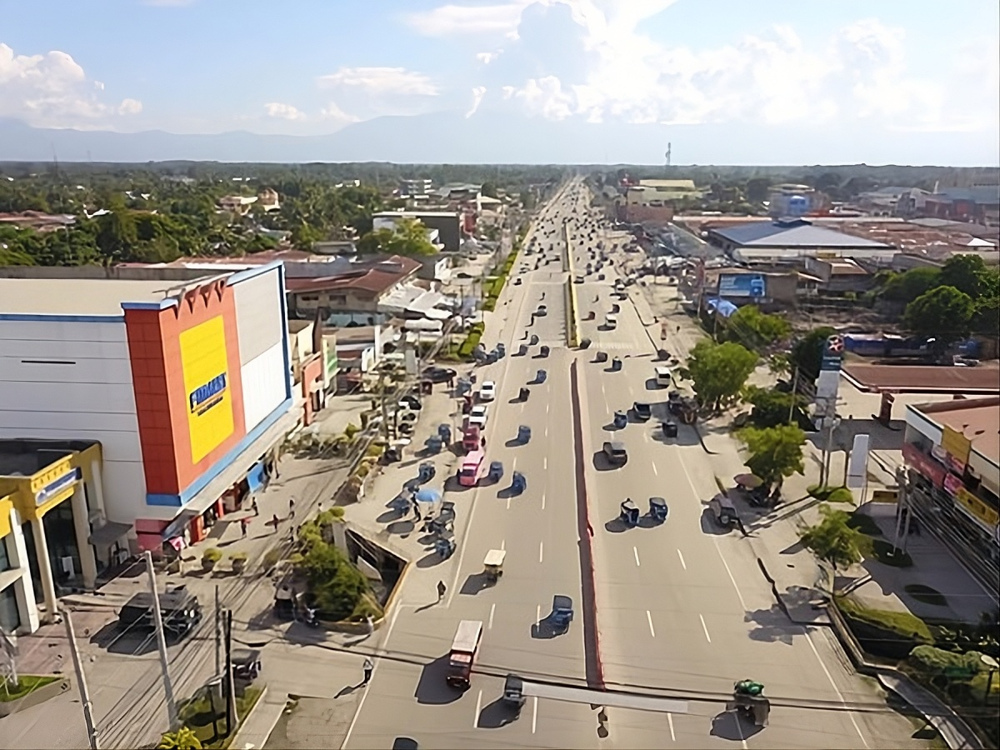

The Gateway to Sultan Kudarat
Tacurong City is one of the most progressive areas in Sultan Kudarat and serves as a key commercial and transportation hub in the province.
The city is known for its balance between urban development and cultural identity. Visitors can experience both modern conveniences and traditional lifestyles in one place.
Tacurong reflects the diversity of Sultan Kudarat. Different ethnic groups live together in harmony, contributing to a vibrant community culture.
Although it may not be a typical tourist destination, Tacurong offers a glimpse of everyday life in the province. It is the perfect starting point for exploring nearby natural attractions.